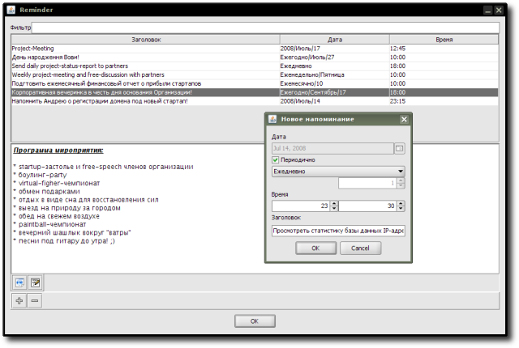
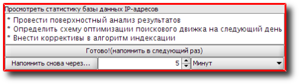
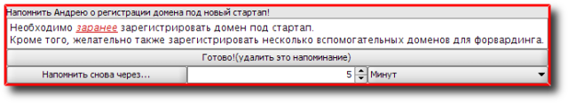

Reminder - reminder manager with ability to create both non-repeat and periodic events; handy functions are: reminders are created in form of HTML-page with ability to add images, links etc., quick and flexible control of view modes: it's possible to delete reminder (only for non-repeat ones) or postpone it to next time (only for periodic ones) or to some specific time period (5 minutes, 1 hour, etc.) right from reminder's pop-up window; particular interest of using this extension appears when it's used in combination with Synchronizer tool-extension; meaning, user can work with reminders independently of where they were created and where user is at the moment reminders have to be displayed (for example, at home or at work, with the assumption that copies of Bias application configured for cross-synchronization are present in both places).
Tool is provided by R. Kasianenko, an author of Bias application.
Addon uses JCalendar - a Java date chooser bean for graphically picking a date provided by Kai Toedter.
Preview:


